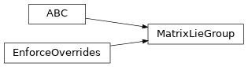
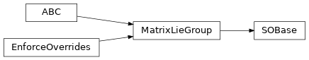
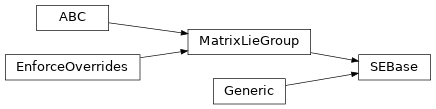

jaxlie._base
Module Contents
Classes
Interface definition for matrix Lie groups. |
|
Base class for special orthogonal groups. |
|
Base class for special Euclidean groups. |
Attributes
- jaxlie._base.GroupType
- jaxlie._base.SEGroupType
- class jaxlie._base.MatrixLieGroup(parameters)[source]
Bases:
abc.ABC,overrides.EnforceOverridesInterface definition for matrix Lie groups.
- matrix_dim :ClassVar[int]
Dimension of square matrix output from
.as_matrix().
- parameters_dim :ClassVar[int]
Dimension of underlying parameters,
.parameters().
- tangent_dim :ClassVar[int]
Dimension of tangent space.
- space_dim :ClassVar[int]
Dimension of coordinates that can be transformed.
- __matmul__(self: GroupType, other: GroupType) GroupType[source]
- __matmul__(self, other: jaxlie.hints.Array) jax.numpy.ndarray
Overload for the
@operator.Switches between the group action (
.apply()) and multiplication (.multiply()) based on the type ofother.
- abstract classmethod identity(cls)[source]
Returns identity element.
- Returns
Identity element.
- Parameters
cls (Type[GroupType]) –
- Return type
GroupType
- abstract classmethod from_matrix(cls, matrix)[source]
Get group member from matrix representation.
- Parameters
matrix (jaxlie.hints.Array) – Matrix representaiton.
cls (Type[GroupType]) –
- Returns
Group member.
- Return type
GroupType
- abstract as_matrix(self)[source]
Get transformation as a matrix. Homogeneous for SE groups.
- Return type
jax.numpy.ndarray
- abstract apply(self, target)[source]
Applies group action to a point.
- Parameters
target (jaxlie.hints.Array) – Point to transform.
- Returns
Transformed point.
- Return type
jax.numpy.ndarray
- abstract multiply(self, other)[source]
Composes this transformation with another.
- Returns
self @ other
- Parameters
self (GroupType) –
other (GroupType) –
- Return type
GroupType
- abstract classmethod exp(cls, tangent)[source]
Computes
expm(wedge(tangent)).- Parameters
tangent (jaxlie.hints.Array) – Tangent vector to take the exponential of.
cls (Type[GroupType]) –
- Returns
Output.
- Return type
GroupType
- abstract log(self)[source]
Computes
vee(logm(transformation matrix)).- Returns
Output. Shape should be
(tangent_dim,).- Return type
jax.numpy.ndarray
- abstract adjoint(self)[source]
Computes the adjoint, which transforms tangent vectors between tangent spaces.
More precisely, for a transform
GroupType:GroupType @ exp(omega) = exp(Adj_T @ omega) @ GroupType
In robotics, typically used for transforming twists, wrenches, and Jacobians across different reference frames.
- Returns
Output. Shape should be
(tangent_dim, tangent_dim).- Return type
jax.numpy.ndarray
- abstract inverse(self)[source]
Computes the inverse of our transform.
- Returns
Output.
- Parameters
self (GroupType) –
- Return type
GroupType
- abstract normalize(self)[source]
Normalize/projects values and returns.
- Returns
GroupType – Normalized group member.
- Parameters
self (GroupType) –
- Return type
GroupType
- abstract classmethod sample_uniform(cls, key)[source]
Draw a uniform sample from the group. Translations (if applicable) are in the range [-1, 1].
- Parameters
key (jaxlie.hints.KeyArray) – PRNG key, as returned by
jax.random.PRNGKey().cls (Type[GroupType]) –
- Returns
Sampled group member.
- Return type
GroupType
- abstract get_batch_axes(self)[source]
Return any leading batch axes in contained parameters. If an array of shape
(100, 4)is placed in the wxyz field of an SO3 object, for example, this will return(100,).This should generally be implemented by
jdc.EnforcedAnnotationsMixin.- Return type
Tuple[int, Ellipsis]
- class jaxlie._base.SOBase(parameters)[source]
Bases:
MatrixLieGroupBase class for special orthogonal groups.
- jaxlie._base.ContainedSOType
- class jaxlie._base.SEBase(parameters)[source]
Bases:
Generic[ContainedSOType],MatrixLieGroupBase class for special Euclidean groups.
Each SE(N) group member contains an SO(N) rotation, as well as an N-dimensional translation vector.
- abstract classmethod from_rotation_and_translation(cls, rotation, translation)[source]
Construct a rigid transform from a rotation and a translation.
- Parameters
rotation (ContainedSOType) – Rotation term.
translation (jaxlie.hints.Array) – translation term.
cls (Type[SEGroupType]) –
- Returns
Constructed transformation.
- Return type
SEGroupType
- classmethod from_rotation(cls, rotation)[source]
- Parameters
cls (Type[SEGroupType]) –
rotation (ContainedSOType) –
- Return type
SEGroupType
- abstract translation(self)[source]
Returns a transform’s translation term.
- Return type
jax.numpy.ndarray
- apply(self, target)[source]
Applies group action to a point.
- Parameters
target (jaxlie.hints.Array) – Point to transform.
- Returns
Transformed point.
- Return type
jax.numpy.ndarray
- multiply(self, other)[source]
Composes this transformation with another.
- Returns
self @ other
- Parameters
self (SEGroupType) –
other (SEGroupType) –
- Return type
SEGroupType